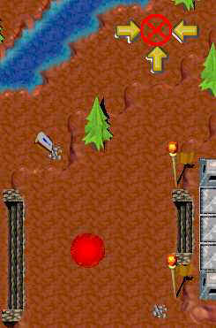
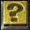
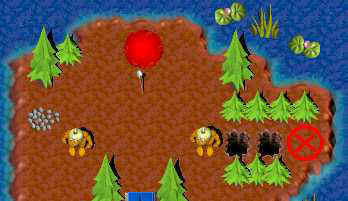
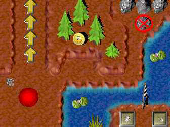
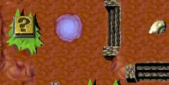
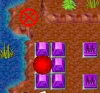

Rocky Rocz
Rocky Rocz 1 : Et surtout, ne casse pas le tas de rochers...
Au début vous avez 2 gruntz ; 1 nu, 1 avec massue coincé
- Le gruntz nu marche à travers les piques jusqu'au point d'interrogation et marche dessus
- Il marche immédiatement en bas, à travers les piques jusqu'à l'escalier qui est apparu et prend la pièce dorée
- Il marche à droite et ressort par les trois flèches jaunes
- Il va prendre le ballon
- Le gruntz au ballon marche sur le bouton bleu pour ouvrir le pont
- Il marche sur le pont et va prendre les gantz.
Le gruntz à gantz se positionne sur le plot à icône de gantz qui libère le passage et le gruntz à massue.
- Le gruntz à gantz marche sur les flèches jaunes
- Il marche vers le bas pour casser les rochers et prendre la pièce dorée
- Il continue vers le bas et donne le ballon au gruntz ennemi
- Les deux gruntz passent le gruntz ennemi
- Le gruntz à gantz va casser le rocher à côté de la rivière et prend la pièce dorée
Il revient pour casser le grand rocher et prendre la pierre du warp
- Il traverse le pont et s'arrête en haut des escaliers
- Le gruntz à massue traverse le pont et va vers les trois flèches jaunes
- Il se met entre les flèches jaunes pour ouvrir le téléporteur rouge secret
- Le gruntz à pierre du warp entre dans le téléporteur rouge secret
- Il va chercher la lettre du warp et reprend le téléporteur rouge
Ouverture du téléporteur rouge

Ouverture du téléporteur rouge
Point d'ouverture du téléporteur rouge
Passage ouvert par

Il apporte la pierre du warp au roi.
Survivants 2
Morts 0
Outilz 1
Jouetz 1
Bonuz 0
Piéces dorées 3
Secretz 2
Rocky Rocz 2 : A vos pelles...creusez !
Au commencement vous avez deux gruntz nus
- Un gruntz nu prend la pelle
Ouverture du téléporteur secret rouge
- le gruntz à pelle bouche les deux trous et va sur la case qui se trouve derrière et qui ouvre le téléporteur secret
- Le gruntz nu monte et passe dans le téléporteur secret rouge
- Il arrive vers le château, prend la pièce et revient par le téléporteur rouge
- Un des deux gruntz monte sur le bouton bleu verrou
- L'autre gruntz traverse le pont de gauche et va sur le bouton bleu alternatif
- Le premier gruntz traverse le pont de droite
- Ils descendent et tuent le gruntz ennemi violet
Le gruntz à pelle se positionne sur le plot à icône
- Il passe les escaliers à droite, monte, bouche un trou et tue le gruntz violet
- Le gruntz nu monte à son tour pour prendre les gantz
- Il casse le rocher au dessus des gantz (où se trouve la pierre de Warp) et ne prend pas la pierre
- Il redescend et casse les trois rochers en dessous des trous où se trouvent une pièce dorée et un bouton bleu alternatif
Le point d'interrogation
- Il monte sur le bouton bleu alternatif pour ouvrir le pont qui mène au point d'interrogation
- Il va se positionner au bord de l'étang en face de la lettre
- Le gruntz à pelle redescend, traverse le pont
- Il monte sur le point d'interrogation qui ouvre l'accès à la lettre du Warp
- Le gruntz à gantz prend la lettre et revient sur la berge
- Les deux gruntz montent
- Le gruntz à gantz prend la pierre du Warp
Les deux gruntz (à pierre et à pelle) et se positionnent sur les plots à icône
- Le gruntz à pelle va à droite, descend, creuse le premier trou à gauche et prend la pièce dorée
- Il descend et tue le gruntz ennemi violet
- Il continue à descendre et appuie sur le bouton bleu alternatif

Ouverture du téléporteur rouge
Le gruntz à pierre rejoint son camarade, traverse le pont et apporte la pierre au roi
Survivants 2
Morts 0
Outilz 2
Jouetz 0
Bonuz 0
Pièces dorées 3
Secretz 2
Rocky Rocz 3 : Gruntz, à vos moteurs !
Au commencement, vous avez deux gruntz nus
- Un des deux prend les gantz
- Le gruntz à gantz va complètement à droite et descend pour appuyer sur le bouton ocre verrou qui libèrera la boule ce qui tuera le gruntz ennemi violet
- Il monte, casse les trois rochers
- Il va à gauche et casse le rocher qui permet d'aller vers le bas
- Le gruntz nu va à droite, prend la pelle et la pièce dorée
- Il revient sur la gauche, descend et bouche les trous
- Il continue à descendre et se positionne sur le bouton vert verrou
- Le gruntz à gantz descend à son tour et casse les rochers (le rocher le plus bas cache l'ouverture du téléporteur secret mais il ne doit pas l'ouvrir maintenant)
- Il va à droite, traverse le pont en ruine, appuie sur le bouton bleu alternatif
- Le gruntz à pelle traverse le pont
Les deux gruntz (à gantz et à pelle) se positionnent sur les plots à icône
- Un des deux gruntz va à gauche pour appuyer sur le bouton noir à activation unique ce qui tuera le gruntz ennemi violet
Ouverture du téléporteur secret rouge
- Il revient sur ses pas et monte vers les flèches ocres (c'est là que le téléporteur secret rouge s'ouvrira)
- L'autre gruntz retraverse le pont vers le haut, va à gauche puis en dessous des piques où se trouve l'ouverture du téléporteur secret
- Le gruntz vers les flèches passe dans le téléporteur rouge, prend la pièce et revient par le téléporteur rouge
- Le gruntz vers les piques rejoint son camarade
- Le gruntz à gantz monte sur les flèches, ce qui écrase le gruntz ennemi violet qui se trouve devant une flèche
- Conseil : Ne laissez jamais votre gruntz devant une flèche car si vous faites passer un gruntz sur des flèches, celui-ci ne s'arrêtera qu'après être sorti des flèches et écrasera tout ce qui se trouve derrière (ce qui est bien utile quand c'est un ennemi)
- Le gruntz à gantz monte, casse le gros rocher
- Le gruntz à pelle rejoint son camarade, prend la monstrocyclette
Le point d'interrogation
- Le gruntz à pelle creuse le trou sous la monstrocyclette (il y a le point d'interrogation)
- Il monte sur le point d'interrogation ce qui libère la boule
- La boule ira appuyer sur le bouton vert alternatif ce qui ouvrira l'accès à la lettre du Warp
Les deux gruntz (à gantz et à monstrocyclette) se positionnent sur les plots à icône
- Le gruntz à gantz prend la pierre
- Le gruntz à pelle donne la monstrocyclette au gruntz ennemi et va chercher la pierre du Warp
Le gruntz à pierre l'apporte au roi
Survivants 2
Morts 0
Outilz 2
Jouetz 1
Bonuz 0
Pièces dorées 2
Secretz 2

Rocky Rocz 4 : Et le gruntz fut !
Au commencement, vous avez un gruntz nu
- Il prend la massue et tue le gruntz ennemi violet
- Il prend la paille et aspire les quatre flaques de glu
- Il appuie sur le bouton ocre alternatif et passe les flèches
- Déposez le nouveau gruntz sur l'aire de création
- Le gruntz nu passe les flèches à son tour
- Les deux gruntz tuent le gruntz ennemi violet et va sur le bouton vert verrou
- Un des deux gruntz monte sur le bouton vert verrou
- L'autre passe la pyramide verte et monte sur le bouton noir à activation unique
- Le premier gruntz passe la pyramide noire
- Le gruntz nu prend le mégaphone-gantz
- Donnez les gantz au gruntz nu
- Le gruntz à gantz revient en arrière (à gauche) pour casser le rocher et prendre la pièce dorée
Les pyramides vertes et noires
- Le gruntz à paille monte sur le bouton vert de gauche
- Le gruntz à gantz le rejoint, casse le rocher en dessous des pyramides, passe la première série de pyramides vertes et casse le deuxième rocher
- Le gruntz à paille monte sur le bouton vert de droite
- Le gruntz à gantz passe la deuxième série de pyramides vertes et passe dans le téléporteur bleu
Le point d'interrogation
- Il monte, prend la pierre, va à gauche derrière le sapin (où se trouve le point d'interrogation) à gauche du téléporteur bleu sans le prendre
- Le point d'interrogation ouvre un pont et libère la boule vers le haut pour aller écraser le gruntz ennemi rose
- Il prend la pierre et passe dans le téléporteur bleu qui l'amène au dessus des pyramides
- Il appuie sur le bouton noir à activation unique
- Le gruntz à paille monte à travers les pyramides noires baissées, prend les gantz
Les deux gruntz (à gantz et à pierre) se positionnent sur les plots à icône
- Le gruntz à gantz tue le gruntz ennemi violet et casse les rochers pour prendre la pièce dorée
- Il tue le gruntz ennemi rose et prend le mégaphone-paille
- Donnez la paille au gruntz à gantz
- Le gruntz à paille aspire les 4 flaques de glu
- Déposez le nouveau gruntz sur l'aire de création
Les deux gruntz (à paille et à pierre se positionnent sur les boutons violets multi-gruntz
- Le gruntz nu va au milieu des pyramides violettes sur le bouton bleu alternatif
Ouverture du téléporteur secret rouge pour récupérer la lettre
- Le gruntz à paille monte le plus haut possible en bordure de l'étang (c'est l'ouverture du téléporteur secret qui s'ouvrira au milieu des pyramides violettes)
- Le gruntz nu est téléporté là où se trouvait la boule qui roule, il va à gauche, descend pour prendre la lettre et passe dans le téléporteur rouge qui le ramène à sa place
- Le gruntz à paille remonte sur le bouton violet multi-gruntz pour libèrer le gruntz nu
- Le gruntz nu descend du bouton bleu, y remonte pour ouvrir à nouveau le pont, prend la monstrocyclette, traverse le pont et prend le mégaphone-gantz
- Donnez les gantz au gruntz nu
- Le gruntz à gantz casse une brique marron dessus et rouge dessous
Le gruntz à pierre apporte celle-ci au roi
Survivants 3
Morts 0
Outilz 6
Jouetz 1
Bonuz 0
Pièces dorées 2
Secretz 2


>Gruntzigloo
Gruntzigloo 1 : Superzezpionz
Au commencement, vous avez 2 gruntz nus
- Un des deux prend les gantz
- Il casse le rocher de droite et prend la pièce dorée
- Il marche sur la flèche de droite et écrase le gruntz ennemi vert
- Il descend, attire le gruntz ennemi rouge à bombe et l'évite
- Il tue le gruntz ennemi violet à paille
- Il se positionne sur le bouton bleu verrou qui ouvre le pont
- Le gruntz nu le rejoint et traverse le pont
- Il passe à travers les pyramides vertes et se positionne sur le bouton ocre alternatif qui libère la boule
- La boule va appuyer sur le bouton bleu qui ouvre l'autre pont
- Les deux gruntz traversent le pont
Ouverture du téléporteur secret rouge
- Le gruntz à gantz se positionne sur le ponton de droite en dessous de la flèche ocre ce qui ouvre le téléporteur secret rouge sur le ponton de l'autre pont
- Le gruntz nu passe dans le téléporteur rouge
- Il prend la pièce dorée et revient par le téléporteur rouge
- Il va à gauche et prend le mégaphone-pelle
- Donnez la pelle au gruntz nu
- Le gruntz à pelle monte, remplit un trou pour passer
- Le gruntz à gantz le rejoint
- Les deux gruntz tuent le gruntz ennemi vert à paille
- Le gruntz à pelle creuse le trou et prend la pièce dorée
Les deux gruntz (à gantz et à pelle) se positionnent sur les plots à icône
- Ils tuent le gruntz ennemi violet à gantz
- Le gruntz à gantz casse le rocher de gauche et prend la pièce dorée
- Le gruntz à pelle remplit le trou, appuie sur le bouton noir à activation unique et prend le kit d'ezpionnage
Les briques
- Le gruntz au kit d'ezpionnage l'utilise pour savoir quelles sont les briques cassables
- Le gruntz à gantz casse les briques marrons du bas
- Les deux gruntz tuent le gruntz ennemi vert
- Le gruntz au kit d'ezpionnage l'utilise pour savoir quelles sont les briques cassables
- Le gruntz à gantz casse les briques marrons du haut
- Les deux gruntz tuent le gruntz ennemi violet
- Le gruntz à gantz passe le pont alternatif et tue le gruntz ennemi violet sur l'île
Le point d'interrogation pour aller chercher la lettre du warp
- Le gruntz à gantz passe le pont alternatif de gauche pour appuyer sur le point d'interrogation qui lui ouvre un pont vers le haut afin d'aller chercher la lettre du warp
- Il revient
- Les deux gruntz traversent les ponts alternatifs
Découverte de la pierre warp
- Le gruntz à gantz casse les rochers pour libérer la pierre mais ne la prend pas
- Les deux gruntz tue le gruntz ennemi vert
- Le gruntz à kit d'ezpionnage l'utilise pour détecter les briques cassables tout autour du château
- Il remonte et prend la pierre
- Le gruntz à gantz casse la brique marron en bas à droite du château
- Il va à gauche et casse les rochers pour aller chercher la pièce dorée
Le gruntz à pierre l'apporte au roi
Survivants 2
Morts 0
Outilz 3
Jouetz 0
Bonuz 0
Pièces dorées 5
Secretz 2
Gruntzigloo 2 : J'ai toujours rêvé d'être un maçon
Au commencement, vous avez 2 gruntz nus
- Un des deux prend le ballon et les gantz
- L'autre gruntz nu prend le mégaphone-pelle
- Donnez-lui la pelle
- Il creuse le trou à côté du mégaphone et prend la pièce dorée
- Il descend, bouche un trou pour passer, creuse le trou de gauche et prend la pièce dorée
- Le gruntz à gantz le rejoint, casse les rochers et prend la pièce dorée
- Le gruntz à ballon le donne au gruntz ennemi violet à l'épée
- Pendant ce temps les deux gruntz passe et monte jusqu'au brique marron
- Le gruntz à gantz casse les briques marrons et tue le gruntz ennemi bleu
Les deux gruntz (à gantz et à pelle) se positionnent sur les plots à icônes
- Ils tuent le gruntz ennemi violet, montent et tue le gruntz ennemi vert au bouclier
- Le gruntz à pelle monte, va à gauche, bouche le trou et se positionne sur le bouton ocre verrou
- Le gruntz à gantz casse les rochers du haut
- Il passe sur la double flèche, prend le bonuz d'invisibilité
- Il continue à gauche à travers les gruntz ennemis violets, prend la pièce et va appuyer sur le bouton noir à activation unique
- Il casse les rochers du dessous et prend le kit de maçonnerie
Elimination et traversée des boules
- Le gruntz maçon va à droite, construit en diagonal une brique sur le carré gris sur la trajectoire de la boule ce qui la casse
- Il continue à droite et fait pareil pour la deuxième boule
- Il revient sur la gauche
- Le gruntz à pelle va chercher les gantz
- Le gruntz à gantz casse les briques pour rejoindre son camarade
Le point d'interrogation pour récupérer la pièce dorée
- Il va vers le bas à travers les piques, va à droite, casse le rocher (il y a le point d'interrogation derrière les sapins)
- Le gruntz au kit de maçonnerie descend à son tour par dessus les piques et attend en face de la pièce dorée
- Le gruntz à gantz monte sur le point d'interrogation ce qui ouvre le passage pour aller chercher la pièce dorée
- Le gruntz au kit de maçonnerie va chercher la pièce dorée et revient sur la rive
Récupération de la pierre du warp
- Le gruntz à gantz va sur le bouton bleu alternatif qui ouvre un pont
- Le gruntz à kit de maçonnerie passe le pont et prend la pierre du Warp
- Il monte, traverse le pont en ruine et appuie sur le bouton bleu alternatif
- Le gruntz à gantz traverse petit pont ouvert et prend le diable à ressort
Les deux gruntz (à gantz et à pierre) positionnent sur son plot à icône
- Le gruntz à gantz casse les briques marrons et tue le gruntz ennemi bleu maçon
- Le gruntz à gantz casse les briques dessous et donne le diable à ressort au gruntz ennemi vert à massue
- Pendant ce temps les deux gruntz descendent jusqu'à l'escalier
- Le gruntz à gantz va à droite et monte chercher la pièce dorée
- Il redescend en prenant soin d'appuyer une fois de plus sur le bouton bleu alternatif pour ouvrir le pont
Ouverture du téléporteur secret rouge pour récupérer la lettre de warp
- Il traverse le pont, casse une brique marron, contourne le château et va se positionner juste au dessus du trou ce qui ouvre le téléporteur rouge secret en dessous des escaliers
- Le gruntz à pierre passe dans le téléporteur rouge
- Il prend la lettre et revient par le téléporteur rouge
Le gruntz à pierre traverse le pont et l'apporte au roi
Survivants 2
Morts 0
Outilz 4
Jouetz 2
Bonuz 1
Pièces dorées 6
Secretz 2
Gruntzigloo 3 : Hé, les copains ! Ne me laissez pas tomber !
Au commencement, vous avez 2 gruntz nus
- Un des deux prend le mégaphone-gantz
- Donnez-lui les gantz
- Le gruntz à gantz traverse le pont alternatif, prend la pièce dorée, continue et casse les rochers
- Il tue le gruntz ennemi violet à paille et casse les rochers de gauche
- Il traverse le pont au-dessus puis va à gauche et traverse le pont alternatif jusqu'au bouton vert alternatif
- Il descend par le pont en dessous du bouton vert et casse les rochers de droite
- Le gruntz nu monte, traverse le pont alternatif, prend la paille et aspire les deux flaques de glu
- Il va à gauche par dessus la pyramide verte baissée
Les deux gruntz (à gantz et à paille) se positionnent sur les plots à icône
- Les deux gruntz tuent le gruntz ennemi violet à paille
- Le gruntz à paille aspire les deux flaques de glu et se positionne sur le bouton violet multi-gruntz
- Le gruntz à gantz casse les rochers autour du bouton violet multi-gruntz, prend la pièce dorée cachée sous un rocher et se positionne sur le bouton
- Déposez le nouveau gruntz sur l'aire de création
- Le gruntz nu va à gauche, monte, passe les pyramides noires baissées, traverse le pont et appuie sur le bouton noir à activation unique qui le bloque ici et qui ouvre les autres pyramides noires pour accéder aux plots à icône
- Le gruntz à gantz va à gauche, casse le gros rocher, appuie sur le bouton vert alternatif
Les deux gruntz (à gantz et à paille) se positionnent sur les plots à icône
- Les deux gruntz tuent le gruntz ennemi vert à paille
- Le gruntz à paille aspire les deux flaques de glu
- Les deux gruntz descendent et tuent le deuxième gruntz ennemi vert à paille
- Le gruntz à paille aspire les deux flaques de glu et appuie sur le bouton noir à activation unique
- Il va ensuite se positionner sur un des deux boutons violets multi-gruntz
- Déposez le nouveau gruntz sur l'aire de création
- Le nouveau gruntz descend et va se positionner sur le deuxième bouton violet multi-gruntz
Le point d'interrogation
- Le gruntz à gantz prend le bonuz de super vitesse, va à droite par dessus la pyramide violette baissée, passe à travers les quatre gruntz ennemis verts aux épées et va appuyer sur le bouton noir à activation unique
- Il va chercher le ballon et le donne au gruntz ennemi violet à l'épée
- Pendant que le gruntz ennemi joue, il casse le rocher qui se trouve devant le gruntz ennemi et appuie sur le point d'interrogation
- Il monte rapidement au dessus du bouton noir pour aller chercher les deux pièces dorées et ressortir
- Il redescend en dessous du gruntz ennemi violet, casse le rocher et prend la pièce dorée
Le téléporteur secret rouge pour récupérer la lettre du warp
- Le gruntz à gantz remonte entre les sapins ce qui ouvre le téléporteur secret rouge un peu plus haut à droite
- Il contourne par la droite le gruntz ennemi violet pour passer dans le téléporteur rouge
- Il casse le rocher, prend la lettre et revient par le téléporteur rouge
Le champ de flèches ocres
- Il contourne à nouveau le gruntz ennemi violet par la droite pour aller appuyer sur le bouton ocre alternatif
- Il traverse les flèches ocres et appuie sur le bouton vert alternatif
- Il casse une brique rouge (et perd ses gantz)
- Les trois gruntz passe l'ouverture ainsi faite
- Ils tuent le gruntz ennemi vert à paille
- Un des gruntz prend le mégaphone-diable à ressort
- Deux des gruntz se mettent à l'abri en haut ou en bas (derrière les piques par exemple)
- Un des gruntz attire le gruntz ennemi rouge à bombe bien en face des escaliers de gauche et s'écarte pour que le gruntz ennemi aille exploser vers le rocher et ainsi le casser
- Un des gruntz prend la pièce dorée ainsi découverte
- Donnez le diable à ressort à un des gruntz
- Le gruntz à diable à ressort va à droite, le donne au gruntz ennemi rose à l'épée, prend la pierre
Le gruntz à pierre l'apporte au roi
Survivants 4
Morts 0
Outilz 2
Jouetz 2
Bonuz 1
Pièces dorées 6
Secretz 2
Gruntzigloo 4 : Ah ! Si j'avais un roc...!
Au commencement, vous avez trois gruntz, deux nus et un avec gantz coincé vers le château
- Un des gruntz nu monte, appuie sur le minuteur et passe les pyramides argents
- Il prend le mégaphone-paille
- Il monte, prend les gantz et tue le gruntz ennemi violet à chapeau-canon
- Donnez la paille au gruntz nu
- Le gruntz à paille aspire les quatre flaques de glu
Les deux gruntz (à gantz et à paille) se positionnent sur les boutons violets multi-gruntz
- Déposez le nouveau gruntz sur l’aire de création
- Le nouveau gruntz va à droite, traverse le pont en ruine, prend le rocz, finit de traverser le pont en ruine
- Il tue à distance les deux gruntz ennemis (à l’épée et au chapeau-canon)
Le téléporteur secret rouge pour accéder au point d'interrogation
- Le gruntz à rocz monte sur les piques entre le bouton vert et la pyramide rouge ce qui ouvre le téléporteur rouge secret à gauche des boutons verts
- Il passe dans le téléporteur rouge qui l’amène vers la pièce dorée à gauche
- Il prend la pièce dorée
Le point d'interrogation
- Le gruntz à gantz descend tout en bas et casse le rocher en face de la pièce dorée
- Le gruntz à rocz va sous les sapins et appuie sur le point d’interrogation
- Le gruntz à gantz empreinte l’escalier ouvert par le point d’interrogation, casse le rocher entre les deux pyramides grises (ce qui permettra à la fin d’aller chercher la lettre) et ressort avant d’être bloqué
- Le gruntz à rocz revient par le téléporteur rouge
Les deux gruntz (à gantz et à paille) positionnent sur les plots à icône
- Le gruntz à gantz casse les rochers
- Il passe la double flèche, casse le rocher et va jusqu’aux pyramides vertes
- Le gruntz à paille le rejoint et aspire les flaques de glu
- Le gruntz à rocz actionne le bouton vert de droite puis celui du milieu puis celui de droite à nouveau pour permettre aux deux autres gruntz de passer les pyramides vertes
- Les deux gruntz (à gantz et à paille) tuent le gruntz ennemi violet à paille
- Le gruntz à paille aspire la flaque de glu
- Le gruntz à gantz va à gauche et casse le gros rocher
- Il appuie sur le bouton rouge verrou pour permettre au gruntz à rocz d’atteindre le bouton noir à activation unique
- Conseil : Attirez le tir du gruntz ennemi vert à chapeau-canon et pendant qu’il se recharge, mettez votre gruntz sur le bouton rouge, faites passer la pyramide rouge baissée au gruntz à rocz puis mettez à l’abri votre gruntz du bouton rouge.
- Le gruntz à gantz monte et casse le rocher le plus haut puis prend le ballon
- Il descend et appuie sur le bouton bleu alternatif
- Le gruntz à paille passe le pont ouvert, prend la pièce dorée et le diable à ressort et il rejoint le plot à icône
- Conseil : Pour ne pas vous faire tirer dessus quand votre gruntz prend la pièce dorée, laissez votre gruntz sur le ponton juste devant la pièce, attirer le tir du gruntz ennemi avec le gruntz à gantz au-dessus et prenez la pièce pendant qu’il se recharge.
Les deux gruntz (au ballon et au diable à ressort) se positionnent sur les plots à icône
- Le gruntz à paille donne le diable à ressort au gruntz ennemi vert à massue
- Le gruntz à gantz donne le ballon au gruntz à l’épée, va en bas à droite, casse les rochers, prend la pièce dorée et remonte jusqu’au rocher à gauche
- Le gruntz à paille le rejoint
- Conseil : Il vaut mieux que ce soit le gruntz à gantz qui donne le diable à ressort au gruntz ennemi à massue car il est alors plus près des rochers. Vous pouvez inverser les jouets en les posant tous les deux par terre et en les faisant prendre par l’autre gruntz.
- Le gruntz à gantz casse les rochers et va tuer le gruntz ennemi vert à chapeau-canon
- Il appuie sur le bouton rouge alternatif, va à gauche, passe les pyramides rouges baissées et descend vers le labyrinthe de pyramides rouges
- Le gruntz à paille aspire la flaque de glu et rejoint son camarade
Le labyrinthe de pyramides rouges
- Le gruntz à paille monte sur le bouton rouge verrou
- Le gruntz à gantz va appuyer sur le bouton rouge alternatif à gauche
- Il monte, casse le rocher, passe la pyramide noire, appuie sur le bouton noir, casse le rocher et prend la pierre du warp
Récupération de la lettre du warp
- Il va à gauche, passe par-dessus le bouton violet et va chercher la lettre de warp (il faut que le rocher au dessus du bouton violet soit cassé. cf. section "le point d'interrogation")
- Il revient et se positionne sur le bouton violet multi-gruntz
Le labyrinthe de pyramides rouges (suite)
- Le gruntz à paille descend dans le labyrinthe de pyramides rouges par la droite en appuyant à chaque fois sur les boutons rouges et verts alternatifs pour s’ouvrir le passage jusqu’au kit d’ezpionnage qu’il prend
- Il se sert du kit d’espionnage pour détecter les briques cassables (ce sont les briques marron sur rouge qui se trouvent en haut au milieu)
- Il se positionne sur le bouton violet multi-gruntz pour libérer le gruntz à gantz
- Le gruntz à gantz casse les briques en haut au milieu : d’abord la brique marron, puis la brique rouge (qui lui fait perdre ses gantz)
Le gruntz à pierre l'apporte au roi
Survivants 4
Morts 0
Outilz 4
Jouetz 2
Bonuz 0
Pièces dorées 4
Secretz 2
Tropicz Panic
Bonbonz à gogo
Laz vegaz
Chérie, j'ai rétréci les gruntz
Chérie, j'ai rétréci les gruntz 1
Chérie, j'ai rétréci les gruntz 2
Chérie, j'ai rétréci les gruntz 3
Chérie, j'ai rétréci les gruntz 4